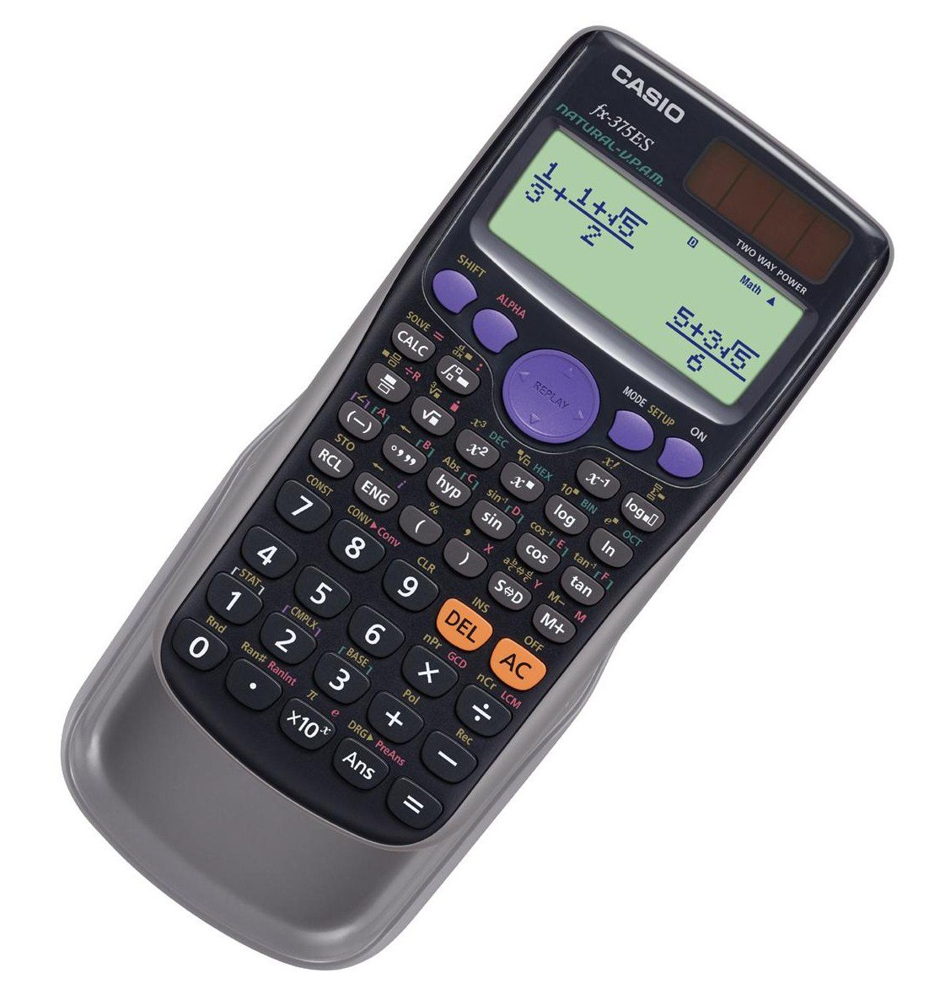
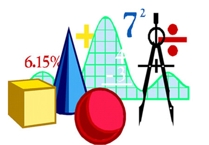

Calculadora científica

Seguir leyendoUna calculadora es un dispositivo que se utiliza para realizar cálculos aritméticos. Aunque las calculadoras modernas incorporan a menudo un ordenador de propósito general, se diseñan para realizar ciertas operaciones más que para ser flexibles. Por ejemplo, existen calculadoras gráficas especializadas en campos matemáticos gráficos como la trigonometría y la estadística

Seguir leyendoEn matemáticas, se dice que una magnitud o cantidad es función de otra si el valor de la primera depende del valor de la segunda. Por ejemplo, el área A de un círculo es función de su radio r (el valor del área es proporcional al cuadrado del radio, A = π·r2). Del mismo modo, la duración T de un viaje en tren entre dos ciudades separadas por una distancia d de 150 km depende de la velocidad v a la que se desplace el tren